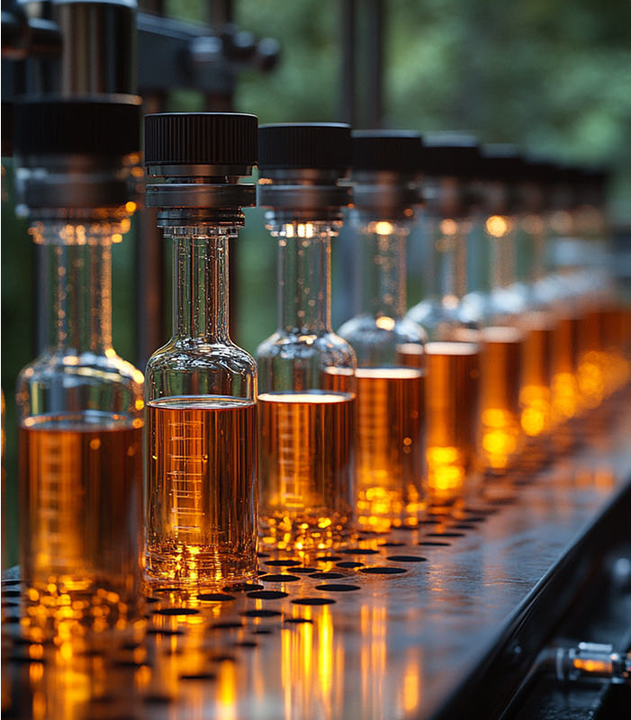

東京 銀座
N2クリニック銀座本院
細胞が紡ぐ、健康と美の新たな物語
N2クリニック銀座本院では、幹細胞療法や免疫細胞療法などの 最先端の再生医療を通じて、あなた本来の自然治癒力を引き出す治療をご提供します。
すべての施術は、安全性を最優先に、 厚生労働省認定のプロトコルと科学的根拠に基づいた厳格な品質管理のもとで行われています。
私たちが目指すのは、 一時的な変化ではなく、持続的な健康と美しさ。
心と体の調和を整えることで、 人生そのものの質を高めていきます。
心と体の調和を整えることで、 人生そのものの質を高めていきます。
再生医療の可能性は、美容や健康を超えて“真のLongevity（長寿）”を実現する力を秘めています。
患者様一人ひとりに寄り添い、 信頼できる最新医療を丁寧にお届けすること。
それが私たちの使命です。
それが私たちの使命です。
心も体も満たされる、新しい医療体験を ぜひご体感ください。
CERTIFIED
国の認可を受けた確かな医療

N2クリニックは、厚生労働省から正式に「再生医療等提供計画番号」を取得した医療機関です。
N2クリニックでは、更年期障害や慢性的な痛みに対する点滴治療、さらに顔の加齢による変化を改善する局所注入治療の提供計画番号を取得しています。
幹細胞を用いた再生医療は、厚生労働省認定の特定認定再生医療等委員会でその適合性が厳しく審査され、適切と認められた後に厚生労働省に治療計画を提出し、計画番号を取得した場合のみ治療が可能となります。
N2クリニックは正規のプロセスを経て厚生労働省に対し、再生医療提供計画を提出し、計画番号を取得しています。
また、治療の有効性を最大限に引き出すために、国内外の最新の研究内容を把握するとともに院内でも臨床研究を実施し、エビデンスの構築に努めています。
ACCESS
クリニックへのご案内
N2クリニック銀座本院
住所：東京都中央区銀座6丁目6-5
HULIC &New GINZA NAMIKI6 11階
HULIC &New GINZA NAMIKI6 11階
TEL：03-3289-0202
診療時間：10:00~18:30
休診日：日曜日
休診日：日曜日
最寄駅
各線銀座駅B5番出口より徒歩4分
各線銀座駅B5番出口より徒歩4分